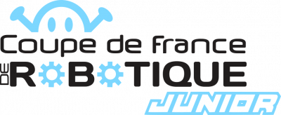

La coupe de france
La Coupe de France de Robotique Junior est un défi scientifique et technique qui propose à des équipes de jeunes participant·e·s de 7 à 18 ans de créer un robot filoguidé afin de découvrir, de façon ludique et pédagogique, les domaines de la robotique : mécanique, électricité, informatique, programmation et électronique.
Pendant 6 à 8 mois (selon la date de la rencontre locale), les équipes doivent concevoir un robot suivant un règlement original et ainsi mener leur projet à terme. Le règlement se renouvelle chaque année et un nouveau thème y est abordé. Il est, généralement, présenté fin septembre-début octobre lors de la rentrée de la Robotique de Planète Sciences, point de départ du projet pour l’année.
Les équipes peuvent, ensuite, valoriser et analyser leur travail pendant les rencontres qualificatives régionales durant lesquelles elles disputent des matchs. Ces derniers durent 90 secondes, lors desquelles plusieurs actions, de niveaux de difficulté différents, sont à réaliser par les robots pilotés.
Les jeunes du podium en rencontres locales sont ensuite qualifiés pour la rencontre nationale.
Chaque rencontre est un moment festif et spectaculaire autour duquel des animations robotiques sur le thème annuel, des présentations de nouvelles technologies… sont organisées. Elles offrent au public et aux participant·e·s la possibilité de découvrir les sciences et techniques d’une manière différente et d’échanger avec d’autres jeunes ayant réaliser des projets similaires.
Pour plus d'informations, rendez-vous sur le site de la coupe en cliquant sur le logo ci-dessous
